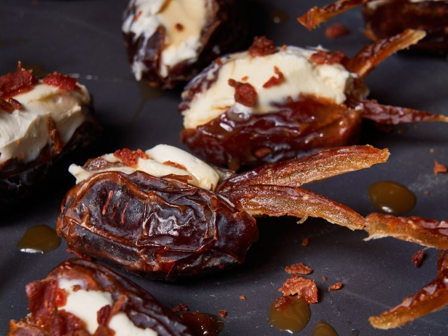

Caramel Bacon Stuffed Dates

Description
These caramel bacon stuffed dates are a delicious sweet-savory appetizer. But add the thin-sliced date "antennae" and they become a delightfully creepy-crawly Halloween treat.
Ingridients
- 2 pints pitted dried dates
- 1 (8 ounce) package cream cheese,softened
- 4 slices cooked bacon, chopped
- 1/4 cup caramel sauce
Steps
- Remove about 4 dates from the package. Slice very thinly lengthwise; set aside.
- Fill each remaining date with a spoonful of cream cheese and place on a plate or serving platter.
- Drizzle each date with caramel sauce and sprinkle with bacon crumbles.
- Place 2 thin slices at the front of each date for "antennae".
Home